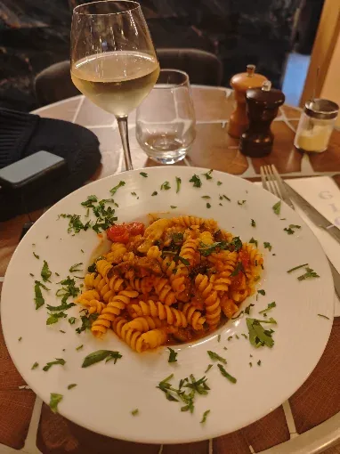
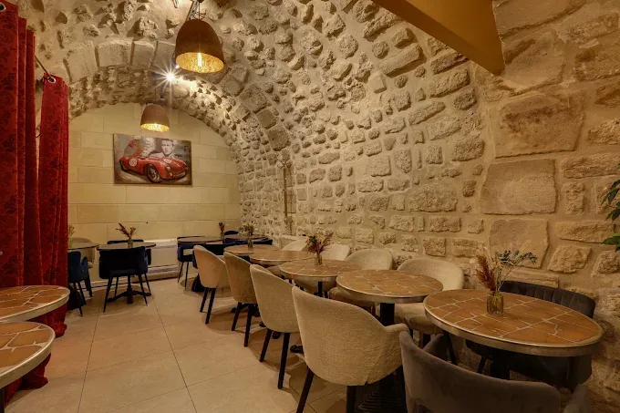

Menu · Automne / Hiver
La Carte
Notre carte évolue au rythme des arrivages. Les produits d’exception — truffe d’Alba, poissons de petite pêche, agrumes de Sicile — sont annoncés en salle chaque jour. Prix nets, service compris.
V végétarien · VG végétalien · SG sans gluten
Menu dégustation
Il Viaggio
125 €
Sept services · pour l’ensemble de la table · accord mets & vins 75 €
- Cicchetti d’accueil
- Crudo du jour
- Burrata & datterini
- Pâte de saison
- Risotto
- Poisson ou viande
- Dolce
Adaptations végétariennes et sans gluten sur demande à la réservation.
Déjeuner
Pranzo
38 €
Entrée + plat ou plat + dessert.
Trois services : 46 €. Servi au déjeuner, en semaine.
Fin d’après-midi
Aperitivo al Bar
24 €
Un cocktail signature ou une coupe de Franciacorta,
planche de cicchetti à partager.
La cave
Les vins
d’une péninsule entière
Deux cent quarante références, presque toutes italiennes, dont une centaine en biodynamie. Notre chef sommelier compose volontiers un accord au verre, plat par plat.
Carte complète des 240 références présentée en salle. Droit de bouchon : 35 € par bouteille.
